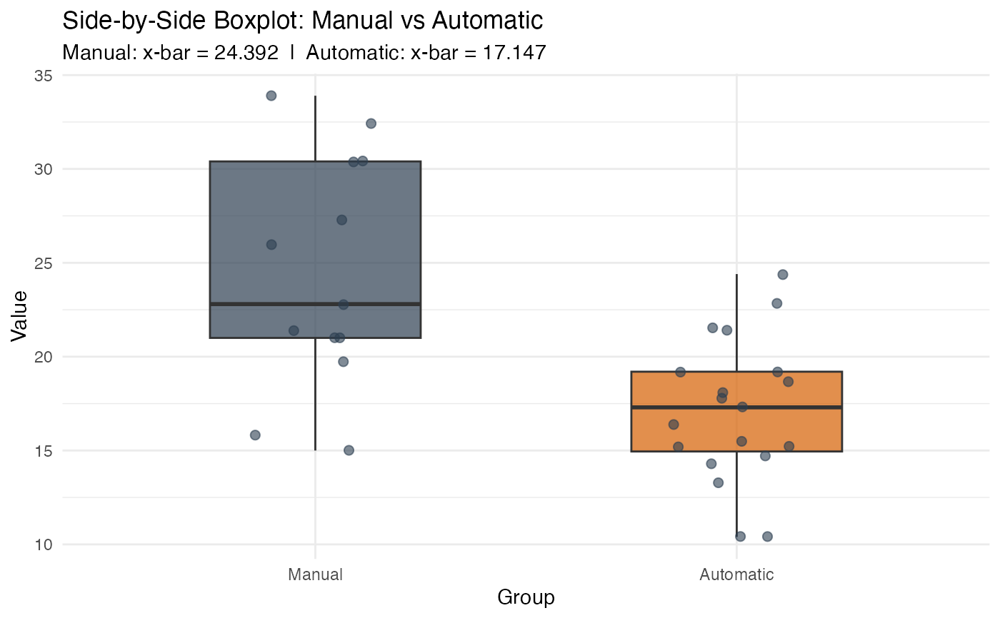
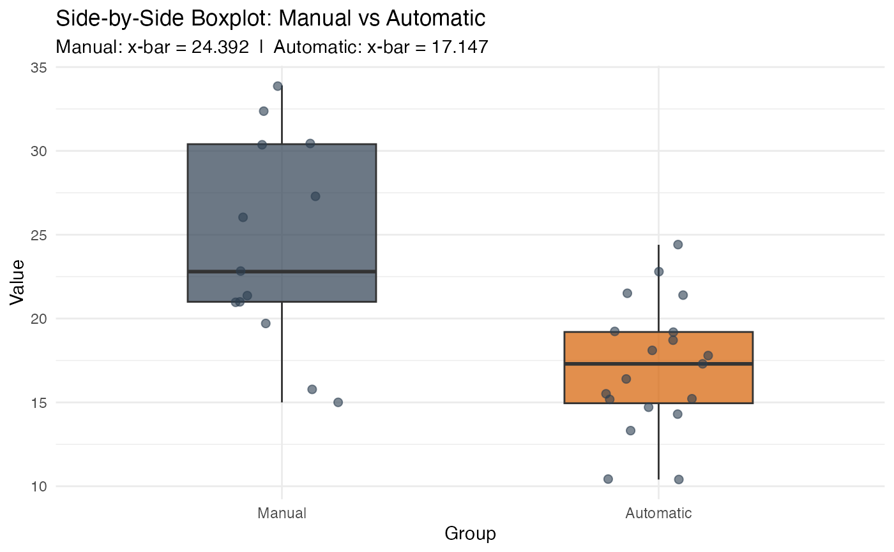

Constructs a confidence interval for the difference between two population means (\(\mu_1 - \mu_2\)) using one of three methods: the 2SD simulation method, a general simulation method, or a theory-based approach.
This function accepts input in two ways:
Summary Statistics: You already know the sample mean, standard
deviation, and sample size for both groups. Pass x_bar_1, sd_1,
n_1, x_bar_2, sd_2, and n_2 directly. Note that
method = "2SD" and method = "simulation" are not available with
summary statistics — they require the individual data values.
Raw Data: You have an actual dataset loaded into R. Pass formula
and data instead, and the function computes all summary statistics
automatically. All three methods are available with raw data.
ci_2mean(
x_bar_1 = NULL,
sd_1 = NULL,
n_1 = NULL,
x_bar_2 = NULL,
sd_2 = NULL,
n_2 = NULL,
group_names = NULL,
sd_type = "sample",
formula = NULL,
data = NULL,
conf_level = 0.95,
method = "2SD",
sim_reps = 1000
)The observed sample mean of Group 1.
Only used when NOT providing formula and data.
The standard deviation of Group 1. Whether this is a
population or sample SD is determined by sd_type.
Only used when NOT providing formula and data.
The sample size of Group 1.
Only used when NOT providing formula and data.
The observed sample mean of Group 2.
Only used when NOT providing formula and data.
The standard deviation of Group 2.
Only used when NOT providing formula and data.
The sample size of Group 2.
Only used when NOT providing formula and data.
A character vector of length 2 giving meaningful names
to the two groups. For example,
group_names = c("Treatment", "Control").
Defaults to c("Group 1", "Group 2"). When using raw data, group
names are extracted automatically from the grouping variable.
Only used when NOT providing formula and data.
A character string specifying whether the standard deviations are from the population or the sample. Must be one of:
"sample"(default) The SDs were calculated from the sample
data. When method = "theory", a T-interval is used with degrees
of freedom computed automatically via the Satterthwaite
approximation.
"population"The true population SDs (\(\sigma\)) are
known. When method = "theory", a Z-interval is used.
When raw data is provided, this is always set to "sample"
automatically.
A two-sided formula of the form Response ~ Group
identifying the numeric response variable and the grouping variable
in your dataset. For example, formula = Score ~ Method.
Only used when NOT providing summary statistics.
A data frame (loaded from a .csv, .txt, or .xlsx file)
containing the variables named in formula.
Only used when NOT providing summary statistics.
The desired confidence level as a decimal. Default is
0.95 for a 95% confidence interval. Common choices are 0.90,
0.95, and 0.99. Note that method = "2SD" only works at 0.95.
The method used to construct the confidence interval. Must be one of:
"2SD"(default) The 2SD Simulation Method. A parametric
bootstrap distribution is generated for the difference in means by independently drawing samples from both groups.
This method is only valid for 95% confidence intervals.The interval
is \((\bar{x}_1 - \bar{x}_2) \pm 2 \times SD\). If you
need a different confidence level, use method = "simulation".
"simulation"The Bootstrap Simulation Method. Same
parametric bootstrap as 2SD, but uses the middle conf_level% of
the simulated distribution to find the bounds. Works for any
confidence level.
"theory"The Theory-Based Method. Uses the unpooled standard error formula and the appropriate Z* or t* multiplier. Works for any confidence level and with both summary statistics and raw data.
The number of bootstrap samples when method = "2SD"
or method = "simulation". Default is 1000.
The type of plot for the bootstrap distribution when
method = "2SD" or method = "simulation". Must be one of:
"distribution"(default) Shows the null bootstrap distribution with shaded confidence region.
"boxplot"Side-by-side boxplots of the two groups. Only available when raw data was provided.
An S3 object of class stat218_2mean_ci containing all computed
values. You can use the following methods on the result:
print(result)Displays a clean summary of the interval.
plot(result)Default shows the bootstrap or theoretical
distribution with the confidence interval shaded and labeled,
plus a forest plot below. Use
plot(result, plot_type = "boxplot") for side-by-side boxplots
(raw data only).
plot_steps(result)Displays a detailed three-panel step-by-step construction of the interval.
A two-sample mean confidence interval gives a range of plausible values for the true difference between two population means \(\mu_1 - \mu_2\). A positive interval suggests Group 1 tends to be higher; a negative interval suggests Group 2 tends to be higher; an interval containing zero is consistent with no difference.
A parametric bootstrap where repeated samples of size n_1 are drawn
from Normal(\(\bar{x}_1\), s_1) and size n_2 from
Normal(\(\bar{x}_2\), s_2). The difference in sample means is recorded
for each repetition. The SD of those differences estimates the SE, and
the interval is point estimate \(\pm 2 \times SD\).
# --- Summary Statistics (theory T-interval, default) ---
result <- ci_2mean(
x_bar_1 = 78.3, sd_1 = 9.1, n_1 = 35,
x_bar_2 = 73.5, sd_2 = 8.4, n_2 = 32,
group_names = c("New Method", "Traditional"),
method = "theory"
)
print(result)
#>
#> ── 95% Confidence Interval for Difference in Means (Theory) ────────────────────
#> ℹ New Method: x-bar = 78.3 | s = 9.1 | n = 35
#> ℹ Traditional: x-bar = 73.5 | s = 8.4 | n = 32
#> ℹ Point Estimate (x-bar1 - x-bar2): 4.8
#> ℹ SD of Sampling Distribution: 2.138
#> • Interval: (0.5301, 9.0699)
plot(result)
#> Error: Can't find method for generic `/(e1, e2)`:
#> - e1: <ggplot2::ggplot>
#> - e2: <ggplot2::ggplot>
plot_steps(result)
#> Error: Can't find method for generic `/(e1, e2)`:
#> - e1: <ggplot2::ggplot>
#> - e2: <ggplot2::ggplot>
# --- Summary Statistics (theory, 90% CI) ---
result2 <- ci_2mean(
x_bar_1 = 78.3, sd_1 = 9.1, n_1 = 35,
x_bar_2 = 73.5, sd_2 = 8.4, n_2 = 32,
group_names = c("New Method", "Traditional"),
conf_level = 0.90, method = "theory"
)
print(result2)
#>
#> ── 90% Confidence Interval for Difference in Means (Theory) ────────────────────
#> ℹ New Method: x-bar = 78.3 | s = 9.1 | n = 35
#> ℹ Traditional: x-bar = 73.5 | s = 8.4 | n = 32
#> ℹ Point Estimate (x-bar1 - x-bar2): 4.8
#> ℹ SD of Sampling Distribution: 2.138
#> • Interval: (1.2325, 8.3675)
plot(result2)
#> Error: Can't find method for generic `/(e1, e2)`:
#> - e1: <ggplot2::ggplot>
#> - e2: <ggplot2::ggplot>
plot_steps(result2)
#> Error: Can't find method for generic `/(e1, e2)`:
#> - e1: <ggplot2::ggplot>
#> - e2: <ggplot2::ggplot>
# --- Raw Data (2SD method) ---
car_data <- mtcars
car_data$transmission <- ifelse(mtcars$am == 1, "Manual", "Automatic")
result3 <- ci_2mean(
formula = mpg ~ transmission, data = car_data,
method = "2SD"
)
#> ✔ Data extracted from "mpg" ~ "transmission":
#> • Manual: x-bar = 24.3923, s = 6.1665, n = 13
#> • Automatic: x-bar = 17.1474, s = 3.834, n = 19
print(result3)
#>
#> ── 95% Confidence Interval for Difference in Means (2sd) ───────────────────────
#> ℹ Manual: x-bar = 24.3923 | s = 6.1665 | n = 13
#> ℹ Automatic: x-bar = 17.1474 | s = 3.834 | n = 19
#> ℹ Point Estimate (x-bar1 - x-bar2): 7.2449
#> ℹ SD of Sampling Distribution: 2.0093
#> • Interval: (3.2262, 11.2636)
plot(result3)
#> Error: Can't find method for generic `/(e1, e2)`:
#> - e1: <ggplot2::ggplot>
#> - e2: <ggplot2::ggplot>
plot(result3, plot_type = "boxplot")

plot_steps(result3)
#> Error: Can't find method for generic `/(e1, e2)`:
#> - e1: <ggplot2::ggplot>
#> - e2: <ggplot2::ggplot>
# --- Raw Data (simulation, 90% CI) ---
result4 <- ci_2mean(
formula = mpg ~ transmission, data = car_data,
conf_level = 0.90, method = "simulation"
)
#> ✔ Data extracted from "mpg" ~ "transmission":
#> • Manual: x-bar = 24.3923, s = 6.1665, n = 13
#> • Automatic: x-bar = 17.1474, s = 3.834, n = 19
print(result4)
#>
#> ── 90% Confidence Interval for Difference in Means (Simulation) ────────────────
#> ℹ Manual: x-bar = 24.3923 | s = 6.1665 | n = 13
#> ℹ Automatic: x-bar = 17.1474 | s = 3.834 | n = 19
#> ℹ Point Estimate (x-bar1 - x-bar2): 7.2449
#> ℹ SD of Sampling Distribution: 1.9186
#> • Interval: (4.1351, 10.3671)
plot(result4)
#> Error: Can't find method for generic `/(e1, e2)`:
#> - e1: <ggplot2::ggplot>
#> - e2: <ggplot2::ggplot>
plot_steps(result4)
#> Error: Can't find method for generic `/(e1, e2)`:
#> - e1: <ggplot2::ggplot>
#> - e2: <ggplot2::ggplot>
# --- Raw Data (theory T-interval) ---
result5 <- ci_2mean(
formula = mpg ~ transmission, data = car_data,
method = "theory"
)
#> ✔ Data extracted from "mpg" ~ "transmission":
#> • Manual: x-bar = 24.3923, s = 6.1665, n = 13
#> • Automatic: x-bar = 17.1474, s = 3.834, n = 19
#> Warning: ! Validity conditions for the theory-based interval may not be met.
#> ℹ At least one group has fewer than 20 observations:
#> • Manual: n = 13
#> • Automatic: n = 19
#> ℹ Verify that the distributions within both groups are roughly symmetric.
#> ℹ Otherwise consider using `method = "2SD"` or `method = "simulation"` if raw
#> data is available.
print(result5)
#>
#> ── 95% Confidence Interval for Difference in Means (Theory) ────────────────────
#> ℹ Manual: x-bar = 24.3923 | s = 6.1665 | n = 13
#> ℹ Automatic: x-bar = 17.1474 | s = 3.834 | n = 19
#> ℹ Point Estimate (x-bar1 - x-bar2): 7.2449
#> ℹ SD of Sampling Distribution: 1.9232
#> • Interval: (3.2097, 11.2802)
#> Warning: ! Validity conditions may not be met — at least one group has fewer than 20
#> observations.
#> ℹ Manual: n = 13 | Automatic: n = 19
#> ℹ Verify that the distributions within both groups are roughly symmetric.
plot(result5)
#> Error: Can't find method for generic `/(e1, e2)`:
#> - e1: <ggplot2::ggplot>
#> - e2: <ggplot2::ggplot>
plot(result5, plot_type = "boxplot")

plot_steps(result5)
#> Error: Can't find method for generic `/(e1, e2)`:
#> - e1: <ggplot2::ggplot>
#> - e2: <ggplot2::ggplot>